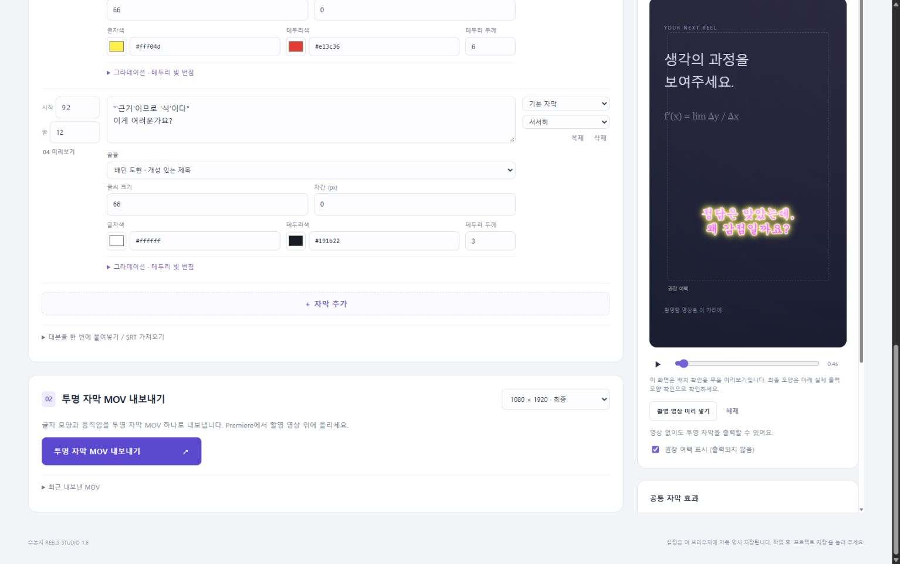
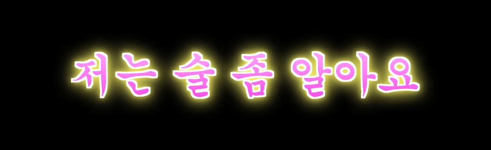

01 / 직원용 빠른 시작자막을 만들고 MOV로 내보내기
대본마다 글꼴·크기·자간·색상을 정하고, 그라데이션과 빛 번짐을 더하는 Windows용 프로그램입니다. 투명 자막 MOV 하나를 내보내 프리미어에서 촬영 영상 위에 올립니다.
1.6 버전에서 추가한 기능궁서·궁서체, 글자 그라데이션, 테두리 빛 번짐을 지원합니다. 내보내기는 투명 MOV 하나로 정리했습니다. 프로젝트는 상단의 프로젝트 저장으로 따로 보관합니다.

매일 사용하는 순서
① 시작.cmd를 열고 실행 창을 켜 둡니다.
② 대본을 입력하고 시작·끝 시간을 맞춥니다.
③ 글꼴과 글자 모양을 정하고 미리보기를 확인합니다.
④ 프로젝트 저장 → 투명 자막 MOV 내보내기를 누릅니다.
⑤ Premiere에서 촬영 영상 V1 / 자막 MOV V2 / 별도 오디오 A1에 배치합니다.
다른 PC에서는 압축을 풀고 실행하세요. Windows와 Python 3.11 이상이 필요하며, 첫 실행에는 인터넷에 연결합니다.
02 / 글꼴 · 크기 · 자간 · 색상대본마다 글자 모양 바꾸기
왼쪽 대본 한 개가 한 장면입니다. 입력칸을 바꾸면 그 장면이 미리보기에 나타나고 보라색으로 표시됩니다. 다른 대본의 설정은 바뀌지 않습니다.
| 조절 항목 | 범위와 사용법 |
|---|
| 글꼴 | 대본 아래에서 선택합니다. 나눔스퀘어 계열·도현·지마켓 산스·빗썸고딕·궁서 등을 사용할 수 있습니다. |
| 글씨 크기 | 24~160. 1080 폭 기준이며 720 출력에서는 비례해서 줄어듭니다. |
| 자간 (px) | -15~30. 0은 기본, 양수는 넓게, 음수는 좁게입니다. |
| 글자색 / 테두리색 | 색상표 또는 #RRGGBB 코드로 고릅니다. 글자색은 그라데이션의 시작색으로도 사용합니다. |
| 테두리 두께 | 0~12. 0이면 테두리가 보이지 않습니다. 그라데이션과 빛 번짐을 켜도 테두리색은 따로 유지됩니다. |
| 스타일 / 움직임 | 말풍선·강조·기본 자막 / 팝업·흔들림·한 글자씩·페이드·고정을 선택합니다. |
공통 설정과 실제 출력 모양
오른쪽 세로 위치·움직임 강도는 모든 자막에 공통입니다. “현재 장면 실제 출력 모양 확인”은 현재 시점의 투명 자막을 실제 렌더러로 보여 줍니다. 바둑판은 투명 배경을 나타냅니다.
긴 문장과 복제긴 문장은 자동 줄바꿈·축소됩니다. 자막을 복제하면 글꼴·크기·자간·색상·그라데이션·빛 번짐도 함께 복사됩니다. 복제 후 시작·끝 시간을 확인하세요.
최대 180초 / 100개 대본 / 대본당 160자입니다. 자막끼리 시간이 겹치면 내보낼 수 없습니다. 자동 음성 인식이나 자동 싱크 기능은 없습니다.
03 / 참고 사진 스타일그라데이션과 테두리 빛 번짐
각 대본 아래의 “그라데이션 · 테두리 빛 번짐”을 펼칩니다. 두 기능은 각각 켜고 끌 수 있습니다.
| 조절 항목 | 사용 방법 |
|---|
| 그라데이션 | 사용을 켜면 글자색 → 그라데이션 끝색으로 이어집니다. 테두리에는 적용되지 않습니다. |
| 그라데이션 방향 | 0°는 왼쪽→오른쪽, 90°는 위→아래, 45°는 좌상→우하입니다. 0~360°를 입력할 수 있습니다. |
| 테두리 빛 번짐 | 사용을 켜고 빛 번짐 색을 고릅니다. 글자와 테두리의 바깥으로 빛이 퍼집니다. |
| 빛 번짐 크기 / 강도 | 크기 0~50 (1080 폭 기준), 강도 0~100%. 크기를 높이면 넓게 퍼지고 강도를 높이면 진해집니다. 둘 중 하나가 0이면 번짐이 보이지 않습니다. |
| 참고 사진 스타일 | 궁서 + 분홍 그라데이션 + 흰 테두리 + 노란 빛 번짐을 적용합니다. 선택한 대본의 글꼴·색상·스타일을 바꾸며, 문구·시간·글씨 크기는 유지합니다. |

말풍선에서도 글자에만 적용됩니다. 큰 빛 번짐은 주변 여백을 넓게 사용합니다. 진한 촬영 영상과 밝은 영상 모두에서 확인하고, 필요하면 테두리 두께와 빛 강도를 낮추세요.
05 / 내보내기 · 저장 · 문제 해결MOV를 프리미어에 올리기
투명 자막 MOV 내보내기를 누르고 완료되면 “투명 자막 MOV 받기” 또는 “내보낸 폴더 열기”를 누릅니다. 생성되는 영상 파일은 captions_alpha.mov 하나입니다. MOV는 ProRes 4444 알파 채널 형식이며 소리는 없습니다.
| 프리미어 트랙 | 올릴 파일 |
|---|
| V2 | 내보낸 captions_alpha.mov |
| V1 | 직접 촬영한 영상 |
| A1 등 | 별도로 만든 목소리와 효과음 |
MOV를 0초에 맞춥니다. 시퀀스는 1080 × 1920 / 30fps를 사용하고, 720으로 출력했다면 720 × 1280 / 30fps로 맞춥니다. 일반 플레이어에서 검게 보여도 Premiere에서 배경 영상이 비치면 정상입니다.
문구와 디자인을 바꾸려면MOV의 글자는 영상으로 완성되어 있습니다. 앱에서 수정한 뒤 다시 내보내세요. 그라데이션·빛 번짐·글꼴·움직임이 모두 MOV에 포함됩니다. 앱에 미리 넣은 촬영 영상은 배치 확인용이며 자막 MOV에는 포함되지 않습니다.
프로젝트 저장과 다른 PC로 이동
프로젝트 저장은 편집 가능한 JSON을 내려받고 data/projects에도 사본을 남깁니다. 다른 PC에는 프로그램 폴더와 JSON을 옮깁니다. 미리보기용 촬영 영상을 넣었다면 data/media도 복사합니다. 궁서·궁서체로 다시 렌더링할 PC에는 해당 Windows 글꼴이 필요합니다.
문제가 생기면
자막이 안 나오면 현재 시간이 자막의 시작·끝 사이인지 확인합니다. 내보내기 오류는 시간 겹침·입력 범위·여유 공간을 확인합니다. 세부 오류는 data/export-logs와 실패 폴더의 error.txt를 담당자에게 전달합니다.
목소리 기준: 캡컷 애덤 1.3배속 / 화낼 때 스포츠엠씨. 목소리와 효과음은 별도로 만든 뒤 Premiere에 추가합니다. 이전 프로젝트는 자막을 유지해 불러오고 그라데이션·빛 번짐은 기본 꺼짐으로 시작합니다.